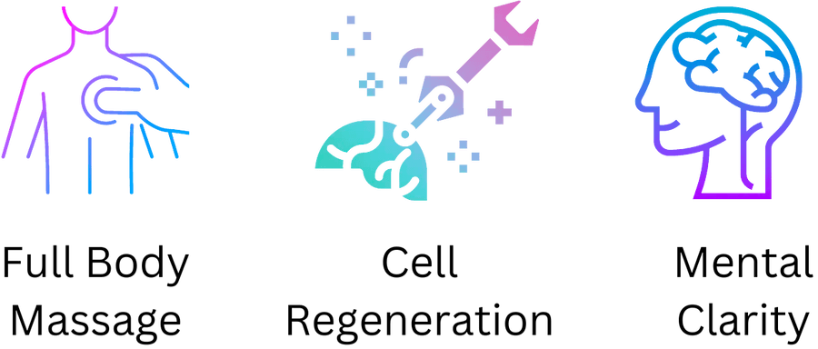
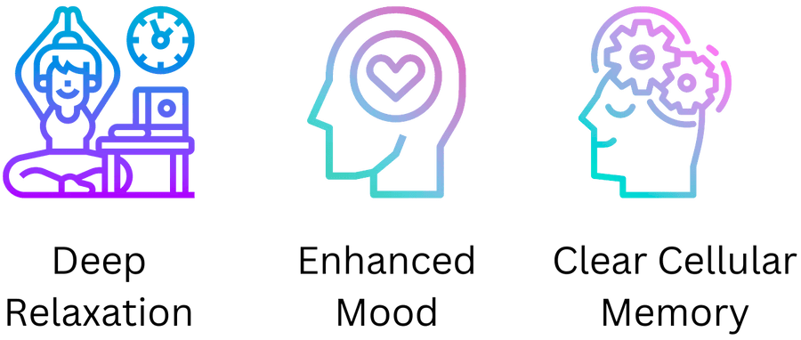

The Churchill Center
Vibrational Individualized Body Enhancement System (V.I.B.E.S)

Bioharmonic Technologies
Vibroacoustic Sound Therapy System

BIOHARMONIC TECHNOLOGIES IS THE INDUSTRY LEADER IN VIBROACOUSTIC SOUND TECHNOLOGY
These are technologies and content that help raise the vibration of the planet and harmonize humanity using sound, light, frequency and vibration.
Read moreShow less
The V.I.B.E.S. combined with Sonic-Ceuticals™ Music Albums from BioHarmonic Technologies is the most effective way for optimizing biochemistry through full body harmonic resonance vibration.
This fully immersive multisensory system vibrates every cell in your body leaving you feeling relaxed, revived and rejuvenated.
- Enhanced mood
- Deep relaxation
- Regeneration
- Mental Clarity
- Health
- Well being
- Optimal human performance
- Clears cellular memory
- Reduces shock and trauma
- Cells and DNA respond to vibration
Can have profound effects on these traumas, pathologies and conditions:
- -Anti-inflammatory + Detox
- -All infections
- -EMFs
- -Any kind of inflammation
- -Back pain any type of Musculo Skeletal conditions or pain
- -Headaches & migraines
- -Auto Immune Diseases
- -Cleans out the deepest levels of your connective tissue
- -Balances brain and nervous system
- -Many nervous system pathologies
- -ADD
- -ASD
- -Most skin conditions
- -Neurodegenerative conditions and disorders
Even if you have none of the above you can use it for:
- -Has another side: ppl can become more creative
- -If you can’t turn your brain off
- -Decreases internal chatter
- -Takes out energy blocks
- -Depression
- -Anxiety
- -Can help in mental, emotional and spiritual blockages and traumas. Can assist in opening up pathways and channels to see where you are blocked and where you are falling short of achieving abundance in your life: be it in love – romance – relationships, money, or happiness…
What are the benefits of the V.I.B.E.S?
- Stress Reduction & Increased Relaxation
- Release of Shock & Trauma Immune System Boost Physical & Emotional Recovery Support Releases cellular memory Reduces inflammation
- Rejuvenates, and regenerates the Improves sleep
- The I.B.E.S uses energy, sound and vibration to influence the body.
- The I.B.E.S clears cellular memory through vibration and customized music which activates the living connective tissue matrix and boosts the immune system.
Here is What science says:
A 2016 study found that meditation music/ singing bowls helped lower blood pressure, improve breathing and circulation, alleviate aches and pains, and strengthen the immune system.
“If we accept that sound is vibration and we know that vibration touches every part of our physical being, then we understand that sound is heard not only through our ears but through every cell in our bodies. Sound can redress imbalances on every level of physiologic functioning and can play a positive role in the treatment of virtually any medical disorder.” -Dr. Mitchell Gaynor, director of Medical
-Dr. Mitchell Gaynor director of Medical Oncology and Integrative Medicine, the Cornell Cancer Prevention Center in New York.
A 2010 Finnish study observed that stroke patients who were given access to music as cognitive therapy had improved recovery.
A 2020 FMRI Study showed that vibroacoustic stimulation alters the brain’s functional connectivity as well as improves sleep in patients with insomnia.
CANCER: VERY IMPORTANT: Biologist Helene Grimal partnered with composer and acupuncturist Fabien Maman to study the relationship of sound waves to living cells. The researchers observed cancer cells exposed to different acoustic instruments (guitar, gong, xylophone) as well as the human voice for 20-minute sessions. Grimal and Maman observed that when exposed to sound, cancer cells lost structural integrity until they exploded after 14-minutes. Using sound of a human voice — the cells were destroyed in nine-minutes.
Next, they worked with two women with breast cancer. For one month, the women devoted three-and-a-half hours a day to “toning,” or singing the scale. One woman’s tumor became undetectable, meaning it simply disappeared. The other woman underwent surgery. Her surgeon reported that her tumor had shrunk dramatically and “dried up.” It was removed and the woman had a complete recovery and remission.
Maman said, “Cancer cells cannot maintain their structure when specific sound wave frequencies attack the cytoplasm and nuclear membranes. When the vibratory rate increases, the cells cannot adapt or stabilize themselves and die by disintegrating and exploding.”
CALL FOR A FREE ASSESSMENT AND THE 1ST TREATMENT IS ON US WHEN YOU BUY YOUR 1ST PACKAGE!
